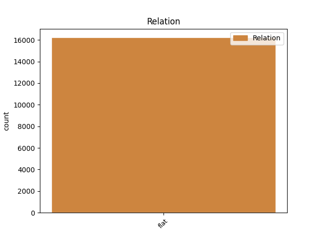
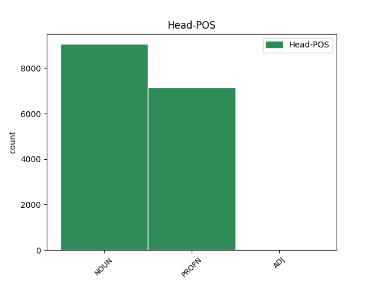
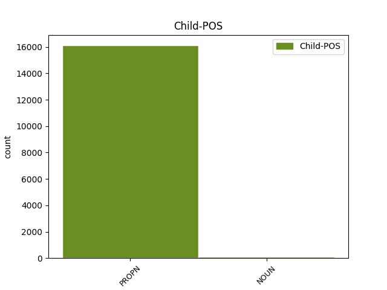

Distribution of features within this leaf



Agreement Rules sorted by frequency.
- When the dependent token is the flat multiword expression(flat) of the head token, and the dependent token is PROPN.
1 Otec otec NOUN NNMS1-----A---- Animacy=Anim|Case=Nom|Gender=Masc|Number=Sing|Polarity=Pos 0 _ _ _
2 americké _ _ _ _ 0 _ _ _
3 vodíkové _ _ _ _ 0 _ _ _
4 pumy _ _ _ _ 0 _ _ _
5 Edward _ _ _ _ 0 _ _ _
6 Teller Teller PROPN NNMS1-----A---- Animacy=Anim|Case=Nom|Gender=Masc|NameType=Sur|Number=Sing|Polarity=Pos 1 flat _ _
7 se _ _ _ _ 0 _ _ _
8 už _ _ _ _ 0 _ _ _
9 nechal _ _ _ _ 0 _ _ _
10 slyšet _ _ _ _ 0 _ _ _
11 , _ _ _ _ 0 _ _ _
12 že _ _ _ _ 0 _ _ _
13 by _ _ _ _ 0 _ _ _
14 se _ _ _ _ 0 _ _ _
15 mohla _ _ _ _ 0 _ _ _
16 vyvinout _ _ _ _ 0 _ _ _
17 kosmická _ _ _ _ 0 _ _ _
18 bomba _ _ _ _ 0 _ _ _
19 na _ _ _ _ 0 _ _ _
20 úrovni _ _ _ _ 0 _ _ _
21 sto _ _ _ _ 0 _ _ _
22 gigatun _ _ _ _ 0 _ _ _
23 ( _ _ _ _ 0 _ _ _
24 ! _ _ _ _ 0 _ _ _
25 ! _ _ _ _ 0 _ _ _
26 ) _ _ _ _ 0 _ _ _
27 TNT _ _ _ _ 0 _ _ _
28 , _ _ _ _ 0 _ _ _
29 což _ _ _ _ 0 _ _ _
30 vyvolalo _ _ _ _ 0 _ _ _
31 zděšení _ _ _ _ 0 _ _ _
32 mezi _ _ _ _ 0 _ _ _
33 astronomy _ _ _ _ 0 _ _ _
34 i _ _ _ _ 0 _ _ _
35 novináři _ _ _ _ 0 _ _ _
36 . _ _ _ _ 0 _ _ _
1 Jana _ _ _ _ 0 _ _ _
2 Nepomuckého _ _ _ _ 0 _ _ _
3 vyjádřil _ _ _ _ 0 _ _ _
4 dne _ _ _ _ 0 _ _ _
5 2 _ _ _ _ 0 _ _ _
6 . _ _ _ _ 0 _ _ _
7 března _ _ _ _ 0 _ _ _
8 léta _ _ _ _ 0 _ _ _
9 Páně _ _ _ _ 0 _ _ _
10 1979 _ _ _ _ 0 _ _ _
11 ve _ _ _ _ 0 _ _ _
12 svém _ _ _ _ 0 _ _ _
13 listě _ _ _ _ 0 _ _ _
14 Františku František PROPN NNMS3-----A---1 Animacy=Anim|Case=Dat|Gender=Masc|NameType=Giv|Number=Sing|Polarity=Pos 0 _ _ _
15 kardinálu kardinál NOUN NNMS3-----A---1 Animacy=Anim|Case=Dat|Gender=Masc|Number=Sing|Polarity=Pos 14 flat _ _
16 Tomáškovi _ _ _ _ 0 _ _ _
17 , _ _ _ _ 0 _ _ _
18 arcibiskupovi _ _ _ _ 0 _ _ _
19 pražskému _ _ _ _ 0 _ _ _
20 , _ _ _ _ 0 _ _ _
21 u _ _ _ _ 0 _ _ _
22 příležitosti _ _ _ _ 0 _ _ _
23 250 _ _ _ _ 0 _ _ _
24 . _ _ _ _ 0 _ _ _
25 výročí _ _ _ _ 0 _ _ _
26 svatořečení _ _ _ _ 0 _ _ _
27 světce _ _ _ _ 0 _ _ _
28 sám _ _ _ _ 0 _ _ _
29 svatý _ _ _ _ 0 _ _ _
30 otec _ _ _ _ 0 _ _ _
31 Jan _ _ _ _ 0 _ _ _
32 Pavel _ _ _ _ 0 _ _ _
33 II _ _ _ _ 0 _ _ _
34 . _ _ _ _ 0 _ _ _
Disagree Examples:
1 Kontakt _ _ _ _ 0 _ _ _
2 : _ _ _ _ 0 _ _ _
3 INPRO Inpro PROPN NNNS1-----A---- Case=Nom|Gender=Neut|NameType=Com|Number=Sing|Polarity=Pos 0 _ _ _
4 - _ _ _ _ 0 _ _ _
5 Institut _ _ _ _ 0 _ _ _
6 , _ _ _ _ 0 _ _ _
7 Samcova _ _ _ _ 0 _ _ _
8 1 _ _ _ _ 0 _ _ _
9 , _ _ _ _ 0 _ _ _
10 110 _ _ _ _ 0 _ _ _
11 00 _ _ _ _ 0 _ _ _
12 Praha _ _ _ _ 0 _ _ _
13 1 _ _ _ _ 0 _ _ _
14 , _ _ _ _ 0 _ _ _
15 pí _ _ _ _ 0 _ _ _
16 Koutná Koutná PROPN NNFS1-----A---- Case=Nom|Gender=Fem|NameType=Sur|Number=Sing|Polarity=Pos 3 flat _ LDeriv=Koutný|SpaceAfter=No
17 , _ _ _ _ 0 _ _ _
18 tel _ _ _ _ 0 _ _ _
19 . _ _ _ _ 0 _ _ _
20 : _ _ _ _ 0 _ _ _
21 ( _ _ _ _ 0 _ _ _
22 02 _ _ _ _ 0 _ _ _
23 ) _ _ _ _ 0 _ _ _
24 232 _ _ _ _ 0 _ _ _
25 4634 _ _ _ _ 0 _ _ _
26 , _ _ _ _ 0 _ _ _
27 FAX _ _ _ _ 0 _ _ _
28 : _ _ _ _ 0 _ _ _
29 ( _ _ _ _ 0 _ _ _
30 02 _ _ _ _ 0 _ _ _
31 ) _ _ _ _ 0 _ _ _
32 231 _ _ _ _ 0 _ _ _
33 6267 _ _ _ _ 0 _ _ _
34 . _ _ _ _ 0 _ _ _
1 Kontakt _ _ _ _ 0 _ _ _
2 : _ _ _ _ 0 _ _ _
3 Ekotip Ekotip PROPN NNIS1-----A---- Animacy=Inan|Case=Nom|Gender=Masc|NameType=Com|Number=Sing|Polarity=Pos 0 _ _ _
4 , _ _ _ _ 0 _ _ _
5 Ing _ _ _ _ 0 _ _ _
6 . _ _ _ _ 0 _ _ _
7 Přibyslava Přibyslava PROPN NNFS1-----A---- Case=Nom|Gender=Fem|NameType=Giv|Number=Sing|Polarity=Pos 3 flat _ _
8 Tichotová _ _ _ _ 0 _ _ _
9 , _ _ _ _ 0 _ _ _
10 Pavlíkova _ _ _ _ 0 _ _ _
11 601 _ _ _ _ 0 _ _ _
12 , _ _ _ _ 0 _ _ _
13 142 _ _ _ _ 0 _ _ _
14 00 _ _ _ _ 0 _ _ _
15 Praha _ _ _ _ 0 _ _ _
16 4 _ _ _ _ 0 _ _ _
17 , _ _ _ _ 0 _ _ _
18 tel _ _ _ _ 0 _ _ _
19 . _ _ _ _ 0 _ _ _
20 : _ _ _ _ 0 _ _ _
21 ( _ _ _ _ 0 _ _ _
22 02 _ _ _ _ 0 _ _ _
23 ) _ _ _ _ 0 _ _ _
24 471 _ _ _ _ 0 _ _ _
25 5528 _ _ _ _ 0 _ _ _
26 , _ _ _ _ 0 _ _ _
27 tel _ _ _ _ 0 _ _ _
28 . _ _ _ _ 0 _ _ _
29 + _ _ _ _ 0 _ _ _
30 FAX _ _ _ _ 0 _ _ _
31 : _ _ _ _ 0 _ _ _
32 ( _ _ _ _ 0 _ _ _
33 02 _ _ _ _ 0 _ _ _
34 ) _ _ _ _ 0 _ _ _
35 472 _ _ _ _ 0 _ _ _
36 5982 _ _ _ _ 0 _ _ _
37 . _ _ _ _ 0 _ _ _
1 Kontakt _ _ _ _ 0 _ _ _
2 : _ _ _ _ 0 _ _ _
3 INTES Intes PROPN NNIS1-----A---- Animacy=Inan|Case=Nom|Gender=Masc|NameType=Com|Number=Sing|Polarity=Pos 0 _ _ _
4 , _ _ _ _ 0 _ _ _
5 výzkum _ _ _ _ 0 _ _ _
6 , _ _ _ _ 0 _ _ _
7 porad _ _ _ _ 0 _ _ _
8 . _ _ _ _ 0 _ _ _
9 a _ _ _ _ 0 _ _ _
10 vzdělávací _ _ _ _ 0 _ _ _
11 služby _ _ _ _ 0 _ _ _
12 , _ _ _ _ 0 _ _ _
13 divize _ _ _ _ 0 _ _ _
14 vzdělávání _ _ _ _ 0 _ _ _
15 , _ _ _ _ 0 _ _ _
16 Slávy _ _ _ _ 0 _ _ _
17 Horníka _ _ _ _ 0 _ _ _
18 1021 _ _ _ _ 0 _ _ _
19 , _ _ _ _ 0 _ _ _
20 150 _ _ _ _ 0 _ _ _
21 06 _ _ _ _ 0 _ _ _
22 Praha Praha PROPN NNFS1-----A---- Case=Nom|Gender=Fem|NameType=Geo|Number=Sing|Polarity=Pos 3 flat _ _
23 5 _ _ _ _ 0 _ _ _
24 , _ _ _ _ 0 _ _ _
25 tel _ _ _ _ 0 _ _ _
26 . _ _ _ _ 0 _ _ _
27 : _ _ _ _ 0 _ _ _
28 ( _ _ _ _ 0 _ _ _
29 02 _ _ _ _ 0 _ _ _
30 ) _ _ _ _ 0 _ _ _
31 523674 _ _ _ _ 0 _ _ _
32 . _ _ _ _ 0 _ _ _
1 Kontakt _ _ _ _ 0 _ _ _
2 : _ _ _ _ 0 _ _ _
3 INPRO Inpro PROPN NNNS1-----A---- Case=Nom|Gender=Neut|NameType=Com|Number=Sing|Polarity=Pos 0 _ _ _
4 - _ _ _ _ 0 _ _ _
5 Institut _ _ _ _ 0 _ _ _
6 , _ _ _ _ 0 _ _ _
7 Samcova _ _ _ _ 0 _ _ _
8 1 _ _ _ _ 0 _ _ _
9 , _ _ _ _ 0 _ _ _
10 110 _ _ _ _ 0 _ _ _
11 00 _ _ _ _ 0 _ _ _
12 Praha _ _ _ _ 0 _ _ _
13 1 _ _ _ _ 0 _ _ _
14 , _ _ _ _ 0 _ _ _
15 pí _ _ _ _ 0 _ _ _
16 Karbanová Karbanová PROPN NNFS1-----A---- Case=Nom|Gender=Fem|NameType=Sur|Number=Sing|Polarity=Pos 3 flat _ SpaceAfter=No
17 , _ _ _ _ 0 _ _ _
18 tel _ _ _ _ 0 _ _ _
19 . _ _ _ _ 0 _ _ _
20 : _ _ _ _ 0 _ _ _
21 ( _ _ _ _ 0 _ _ _
22 02 _ _ _ _ 0 _ _ _
23 ) _ _ _ _ 0 _ _ _
24 231 _ _ _ _ 0 _ _ _
25 6272 _ _ _ _ 0 _ _ _
26 , _ _ _ _ 0 _ _ _
27 FAX _ _ _ _ 0 _ _ _
28 : _ _ _ _ 0 _ _ _
29 ( _ _ _ _ 0 _ _ _
30 02 _ _ _ _ 0 _ _ _
31 ) _ _ _ _ 0 _ _ _
32 231 _ _ _ _ 0 _ _ _
33 6267 _ _ _ _ 0 _ _ _
1 Oblast _ _ _ _ 0 _ _ _
2 : _ _ _ _ 0 _ _ _
3 Rakousko Rakousko PROPN NNNS1-----A---- Case=Nom|Gender=Neut|NameType=Geo|Number=Sing|Polarity=Pos 0 _ _ _
4 - _ _ _ _ 0 _ _ _
5 Tyroly Tyroly PROPN NNIP1-----A---- Animacy=Inan|Case=Nom|Gender=Masc|NameType=Geo|Number=Plur|Polarity=Pos 3 flat _ _